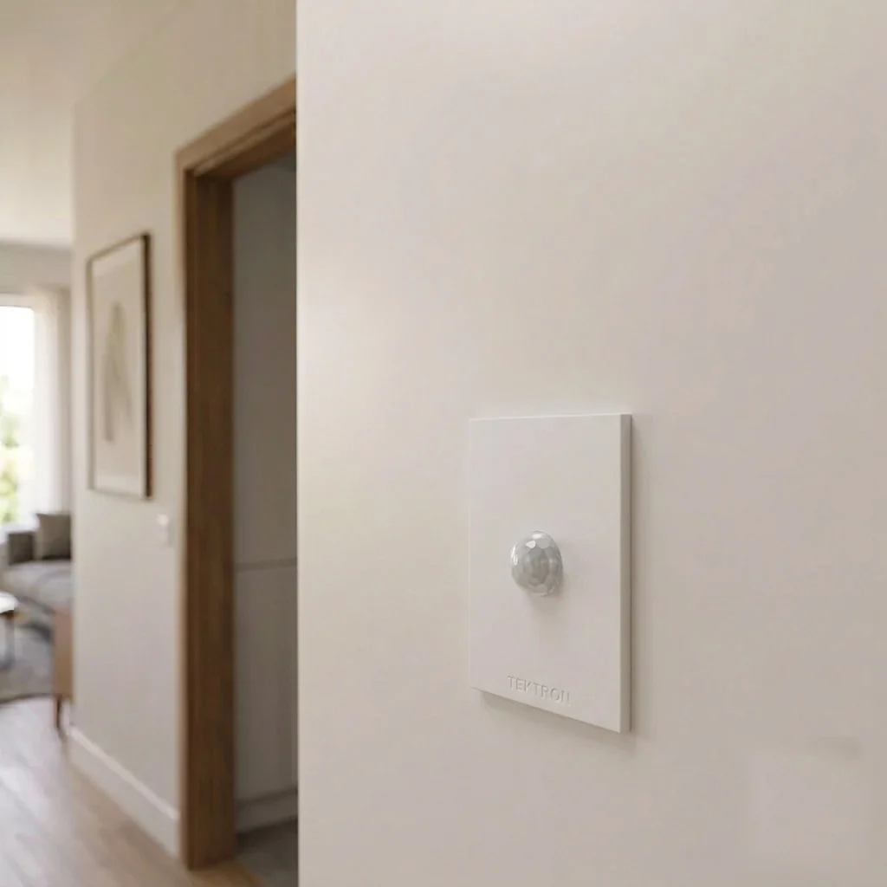
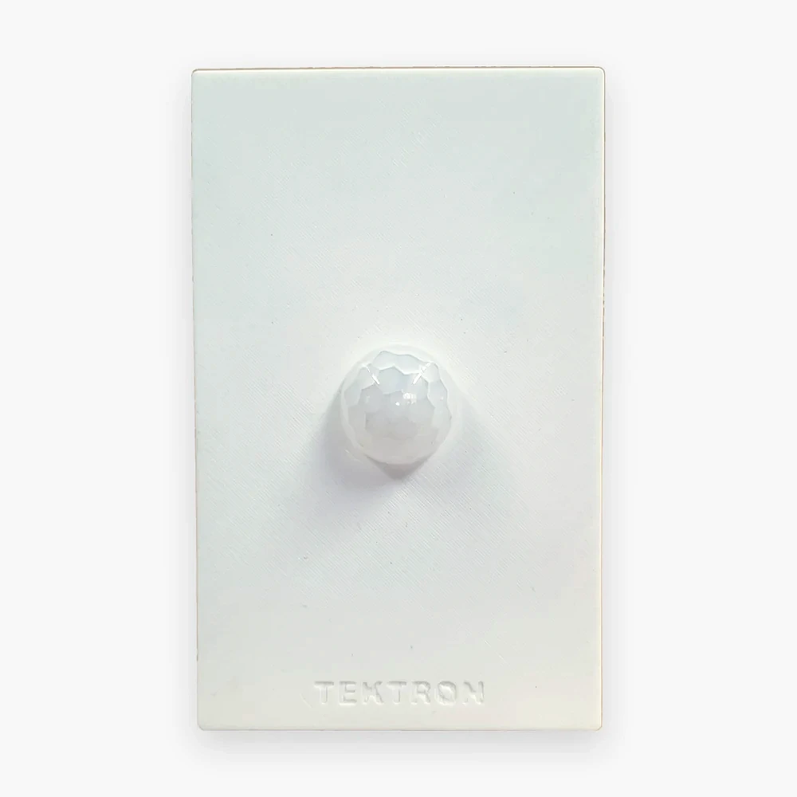
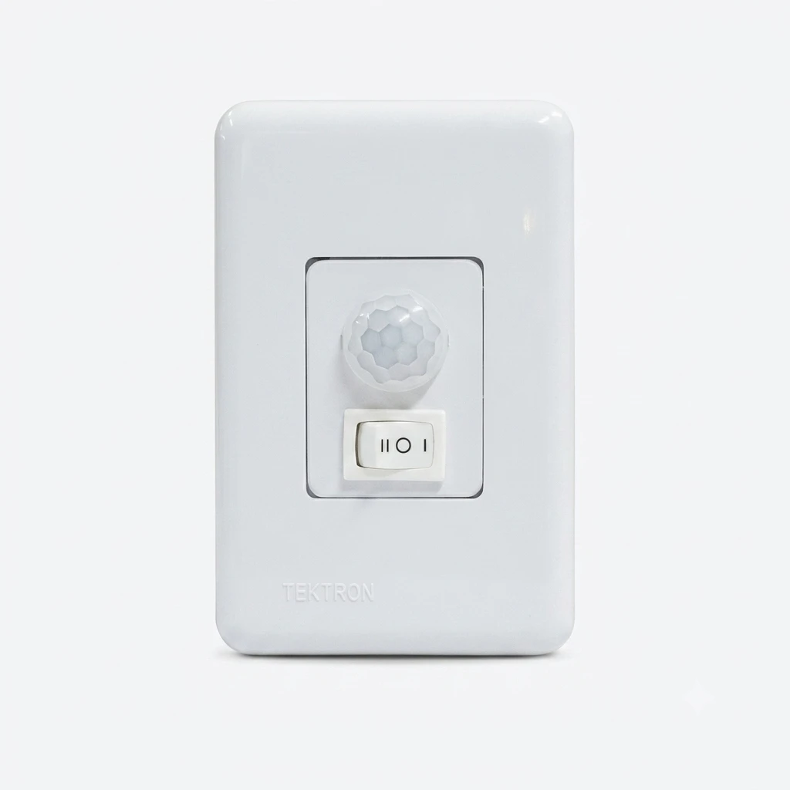

Sensor de movimento para caixa 4x2
Quando o objetivo é automatizar um interruptor já instalado — sem trocar o ponto elétrico nem abrir parede — a solução é um sensor de movimento desenvolvido para a caixa 4x2 padrão. A Tektron fabrica três modelos para esse formato: BS-40, MI-400 e SR-03. A escolha entre eles depende de quanto ajuste e controle manual o ambiente exige.

O problema
- A luz fica acesa porque ninguém lembra de apagar Corredor, banheiro, escritório ou depósito: em ambientes de passagem, o interruptor manual depende da memória de quem sai por último.
- O interruptor está numa posição pouco prática Longe da porta, atrás de um móvel, ou num ponto que obriga a andar no escuro até alcançá-lo.
- Trocar o ponto elétrico não é uma opção A instalação no teto exigiria abrir parede ou forro; o que já existe é uma caixa 4x2 com o interruptor convencional.
O impacto
O resultado mais comum é desperdício contínuo de energia: a lâmpada permanece ligada por horas sem ninguém no ambiente, em espaços que deveriam ter uso rápido — corredor, banheiro, escritório, depósito. Trocar apenas o hábito das pessoas raramente resolve; automatizar o ponto existente resolve.
A solução Tektron
Um sensor de movimento embutido na própria caixa 4x2 substitui o interruptor convencional sem exigir nenhuma obra: usa o mesmo ponto elétrico, o mesmo espelho, e a mesma abertura na parede.
Solução principal: BS-40
Para a substituição direta de um interruptor comum, o BS-40 é o modelo de base da linha: sensor infravermelho embutível em caixa 4x2, com fusível de proteção (4 A) e três tempos de desligamento (5 s · 1 min · 4 min).
Outras opções Tektron, conforme a instalação
Para instalações que precisam de ajuste de sensibilidade e temporização ampliada (até 12 minutos), utilize o MI-400 — ele também aciona no zero-cross, o que reduz o desgaste da lâmpada a cada acionamento.
Para instalações que precisam manter uma opção de controle manual junto ao automático, utilize o SR-03 — sua chave de 3 posições liga a lâmpada direto, desliga, ou deixa sob controle do sensor, sem precisar mexer no disjuntor.
Comparação entre os três modelos
Os três atendem os mesmos ambientes (corredor, garagem, escada, hall, banheiro, escritório, depósito, área comum). A escolha entre eles é uma questão de característica, não de um ser "melhor" que o outro.

BS-40
Substituição direta e simples do interruptor.
MI-400
Mais ajuste e temporização mais longa.

SR-03
Controle manual junto ao automático.
Características que orientam a escolha
- Substituição simples, sem recursos extras Escolha o BS-40 quando o objetivo é só automatizar o interruptor, sem precisar de ajustes finos.
- Ambiente de permanência maior ou precisão na sensibilidade Escolha o MI-400 quando o ambiente pede temporização mais longa (até 12 min) ou ajuste de sensibilidade — por exemplo, um escritório ou banheiro compartilhado.
- Necessidade de controle manual ocasional Escolha o SR-03 quando for útil manter a possibilidade de ligar direto ou desligar sem depender do sensor — por exemplo, num depósito ou área de serviço.
Para instalações onde o teto é o ponto mais indicado — em vez da caixa 4x2 — veja também a página de instalação no teto. Para corredores, escadas e halls com necessidades específicas de campo de detecção, veja sensores para corredores, escadas e grandes ambientes.
Instalação e ligação elétrica
Os três modelos (BS-40, MI-400, SR-03) usam o mesmo padrão de 3 fios, bivolt (127 V / 220 V):
Boas práticas de instalação:
- Desenergize o circuito antes de instalar.
- Confira a tensão (127 V ou 220 V) e a potência da carga: 200 W em 127 V, 350 W em 220 V.
- Os três modelos têm fusível de proteção de 4 A.
- As dimensões (43 × 77 × 117 mm) encaixam no espelho padrão de caixa 4x2.
- Respeite o diagrama de ligação oficial do modelo escolhido.
Resultado esperado
O interruptor passa a acender a luz automaticamente ao detectar movimento, e — o que realmente gera economia — apaga sozinho depois do tempo configurado, sem depender de ninguém lembrar. O ponto elétrico existente continua sendo usado, sem obra e sem alterar o acabamento do ambiente.
Fabricação e suporte
BS-40, MI-400 e SR-03 são fabricados no Brasil pela Tektron, com documentação técnica e diagrama de ligação disponíveis para cada modelo, e suporte técnico especializado para dúvidas de instalação.
Perguntas frequentes
- Qual dos três modelos escolher para caixa 4x2?
- Para substituição simples do interruptor, o BS-40. Para ajuste de sensibilidade e temporização mais longa, o MI-400. Para manter uma opção de controle manual junto ao sensor, o SR-03.
- Qual a diferença entre o BS-40 e o MI-400?
- O MI-400 acrescenta ajuste de sensibilidade, acionamento zero-cross (menos desgaste da lâmpada) e um quarto tempo de desligamento (12 min). O BS-40 tem os três tempos mais curtos (5 s · 1 min · 4 min), sem esses ajustes.
- Funciona em 127 V ou 220 V?
- Os três modelos são bivolt (127 V / 220 V). No neutro, use o fio preto tanto para o neutro em 127 V quanto para a 2ª fase em 220 V.
- Funciona com lâmpada LED?
- Sim, respeitando o limite de potência do modelo: até 200 W em 127 V ou 350 W em 220 V, controlado por relé.
- O sensor detecta uma pessoa parada?
- Este produto detecta movimento. Se a pessoa permanecer completamente imóvel, pode não ocorrer uma nova detecção. Por isso, o termo técnico adotado pela Tektron é sensor de movimento, embora no mercado brasileiro ele também seja conhecido como sensor de presença.
Próximo passo
Seja qual for o modelo — BS-40, MI-400 ou SR-03 —, o próximo passo é o mesmo: